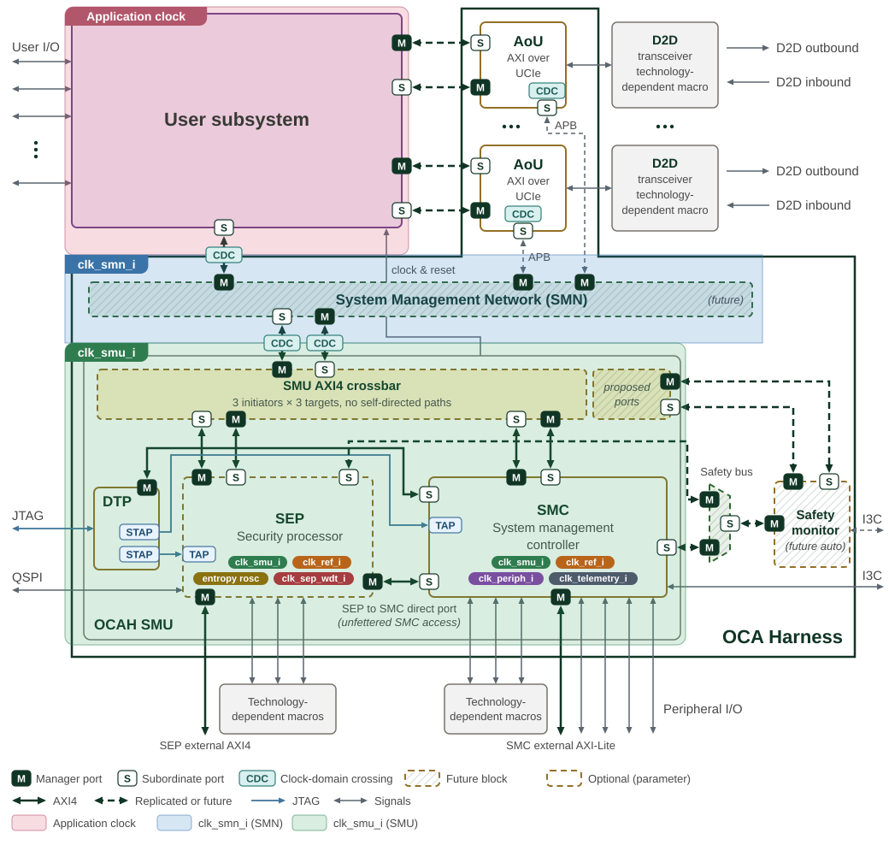

Clock Domains
OCAH distinguishes low-level management timing from functional application
clocks. The SMC receives an always-on reference clock (clk_ref_i) that is
available from power-on, before any PLL is locked. Using this reference clock,
the SMC controls the PLLs during early bring-up and generates the primary
system clock (clk_smu_i) that is then distributed to the SMC itself, the
SEP, and the DTP.
The clk_smn_i input is architecturally independent of clk_smu_i; when they
are asynchronous, CDCs at this boundary are an integration responsibility.
OCAH does not supply synchronizer cells at the SMN interface.
Figure 1 overlays the clock domains on the
OCAH top-level block diagram.
Each zone boundary runs through the CDCs that separate the domains. The AoU
bridges, the D2D macros and the future safety monitor are not assigned a zone.
The SMN reaches each AoU through its APB register port, whose clock is
asynchronous to the AoU core clock; the CDC marker inside each AoU is the
bridge’s own APB synchroniser.
The SMU zone marks clk_smu_i, which clocks the DTP, the crossbar, the SEP and
the SMC. Pills inside the SEP and SMC list their clock inputs: both also use
clk_ref_i. The SMC uses clk_periph_i for its peripherals and
clk_telemetry_i for ATB telemetry. The SEP uses entropy_rosc_sample_clk_i,
shown as "entropy rosc", for its entropy source and clk_sep_wdt_i for its
watchdog.

Table 1 summarises the clock domains present in OCAH.
| Clock | Subsystem | Description |
|---|---|---|
|
SMU (SMC, SEP, DTP) |
Primary system clock, generated by the PLL under SMC control. Distributed internally to the SMC, SEP, and DTP subsystems. Drives the CPU cluster, fabric interconnect, peripheral controllers, and DTP cross-trigger / AXI bridges. |
|
SMN (integration context) |
System Management Network clock. An integration-level input independent of
|
|
SMC, SEP |
Always-on reference clock, available before PLL lock. Used by the SMC for early bring-up, PLL control, reset synchronisation, and peripherals requiring a stable, lower-frequency source. The SEP also clocks its reference counter from this clock. |
|
SMC |
Peripheral clock domain. Drives SMC peripheral subsystems. The reset unit
generates a dedicated synchronised reset ( |
|
SMC |
ATB telemetry clock domain. Separate clock for Advanced Trace Bus data
collection, with its own reset ( |
|
SEP |
Low-frequency watchdog timer clock. Must be independent of the system clock so the WDT can detect system clock failures. |
|
DTP / SEP |
JTAG Test Clock. Drives PTAP, STAP state machines, and all JTAG-domain scan logic inside the DTP/SMC/SEP. |
|
SEP |
Ring-oscillator sample clock for the entropy source (TRNG). Must be
asynchronous to |
1. Reference Counter
Both the SMC and the SEP expose a free-running 64-bit reference counter in their
CPU control register block (the REFERENCE_COUNTER CSR), clocked by the
always-on reference clock (clk_ref_i). It advances continuously from reset,
independent of the system clock (clk_smu_i) frequency or PLL state. Its value
is synchronised into the CPU clock domain for software reads, and software may
write the CSR to reload the counter, after which it resumes counting from the
loaded value. Both subsystems share the same implementation
(prim_refclk_count_w_cdc) and behave identically.
A reload crosses into the reference-clock domain through a one-entry asynchronous FIFO, and a second write issued before the first has crossed is dropped without an error indication. The Programmer’s Guide gives the reload sequence.